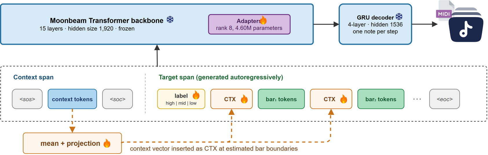
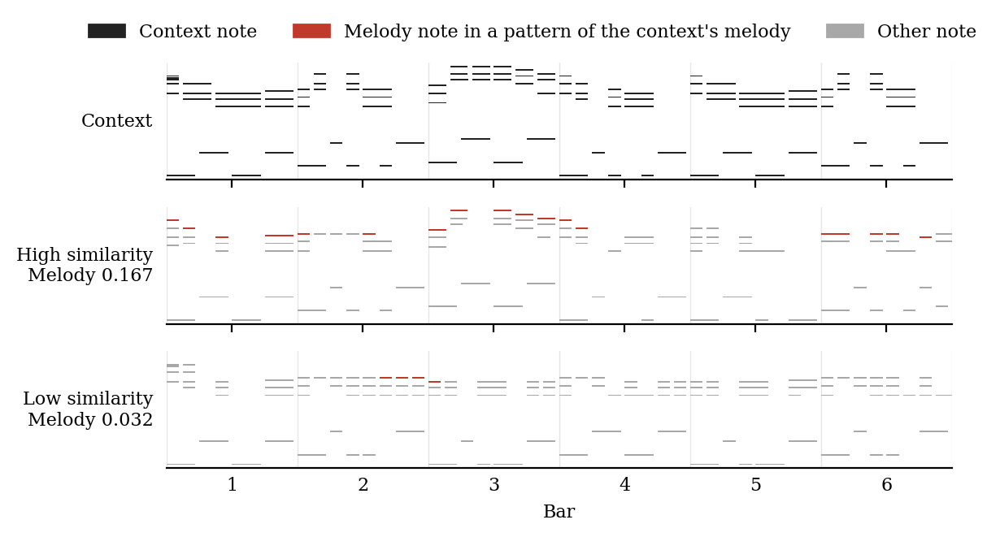

SimLlama
How Close to the Theme? Similarity-Label Conditioning for Game Music Generation
Centre for Digital Music, Queen Mary University of London
Submitted to Computer Music Journal
Abstract
Composers develop music from an original idea, controlling how similar each new section is to it, from near repetition to new material. Game music needs this often, as its material repeats over long play. Music models, however, rarely learn to control similarity from real pieces. We further train a pretrained MIDI model on section pairs from Super Mario pieces. A label states each pair's similarity, and a context vector summarises the given section, or context. For 157 test contexts, the model generates six outputs per label. Twelve measures score the outputs; one main measure each covers melody, pitch content, rhythm and note length. On average, outputs requested as similar are more similar to their context than those requested as dissimilar, and not to other pieces. All twelve measures favour them; each main measure stays significant after correction for multiple tests. On melody, the gap comes mainly from more frequent restatement of the context's melody. Against an otherwise identical model without a label, only the request for high similarity makes outputs more similar. In a listening test, ratings followed melodic overlap with the context most closely of all measures.
How it works
SimLlama continues a section of game music, the context, with a new section at a requested similarity: sim:high, sim:mid or sim:low. It adds the label and a summary of the context to a pretrained MIDI model, Moonbeam, and trains only small added parts.

Audio examples
Each row is one example: a reference and two generated clips that continue it, one requested with sim:high and one with a lower label. Click a button to play; click again to stop. The number on a button is the clip's mean similarity rating, 0 to 100; under each example number is the share of listeners who rated the sim:high clip closer. All clips are solo piano, rendered from MIDI: generated clips about 10 seconds, references about 15 seconds.
How the examples were chosen: of 26 listeners, 20 passed both attention checks. For each of the 30 test trials, we counted the share of them who rated the sim:high clip as more similar. Shown are the 5 trials with the highest share, one per reference. These are clear cases; across all trials the effect is smaller, and the paper reports it in full.
| Example | Reference | sim:high | sim:low |
|---|---|---|---|
| 1 | |||
| 2 | |||
| 3 | |||
| 4 | |||
| 5 |
What the label changes
On melody, the label works mainly through restatement: an output requested as similar takes up the context's melody more often.

Citation
@misc{luo2026simllama,
title={How Close to the Theme? Similarity-Label Conditioning for Game Music Generation},
author={Luo, Shangxuan and Guo, Zixun and Shi, Jinjie and Reiss, Joshua},
year={2026},
eprint={2611.01047},
archivePrefix={arXiv},
note={Submitted to Computer Music Journal}
}Generated clips: CC BY 4.0, from the dataset repository. Reference clips: excerpts of fan transcriptions from NinSheetMusic of music composed for Nintendo games, shown for illustration only; they are not part of the released dataset and not covered by its licence or the code's. Page generated by the authors' release scripts.